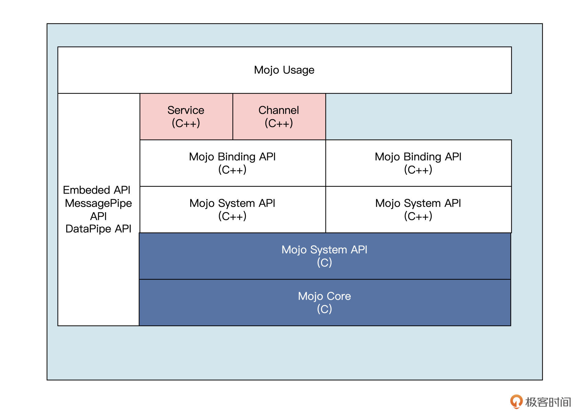
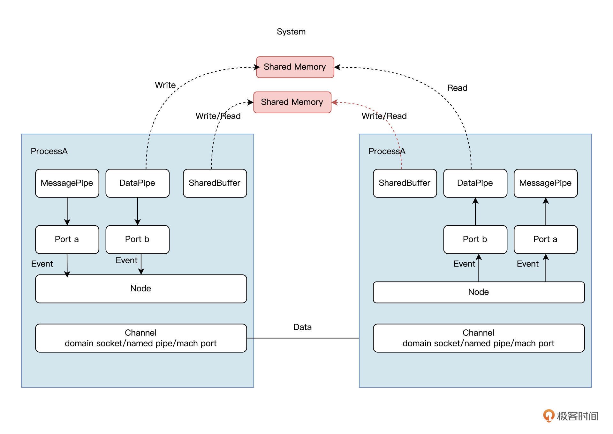
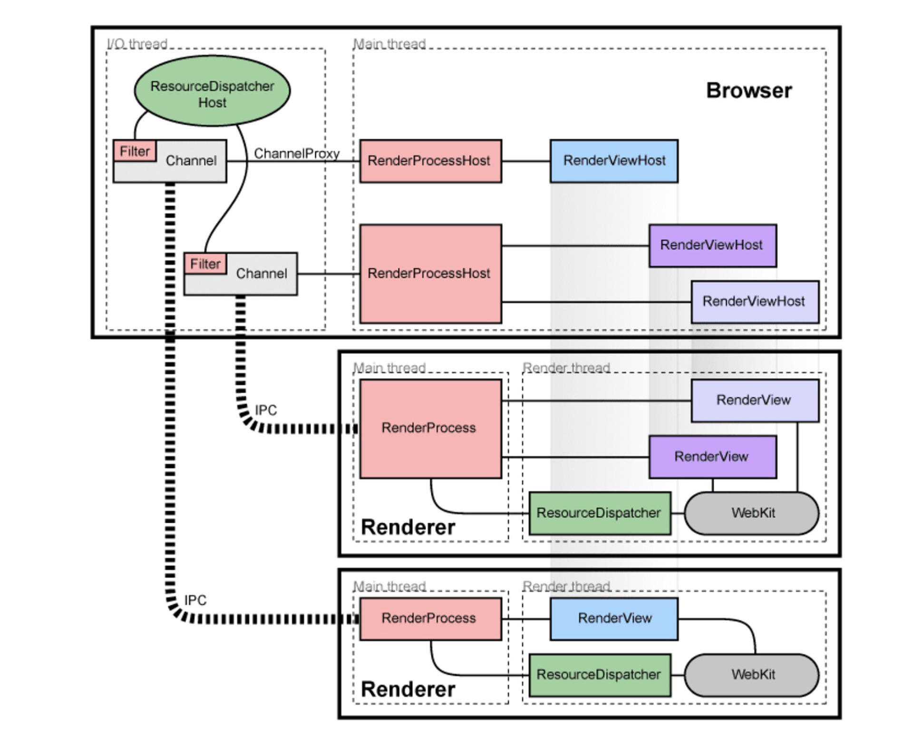

- 00 开篇词 练好基本功，优秀工程师成长第一步.md.html
- 01 CISC & RISC：从何而来，何至于此.md.html
- 02 RISC特性与发展：RISC-V凭什么成为“半导体行业的Linux”？.md.html
- 03 硬件语言筑基（一）：从硬件语言开启手写CPU之旅.md.html
- 04 硬件语言筑基（二）_ 代码是怎么生成具体电路的？.md.html
- 05 指令架构：RISC-V在CPU设计上到底有哪些优势？.md.html
- 06 手写CPU（一）：迷你CPU架构设计与取指令实现.md.html
- 07 手写CPU（二）：如何实现指令译码模块？.md.html
- 08 手写CPU（三）：如何实现指令执行模块？.md.html
- 09 手写CPU（四）：如何实现CPU流水线的访存阶段？.md.html
- 10 手写CPU（五）：CPU流水线的写回模块如何实现？.md.html
- 11 手写CPU（六）：如何让我们的CPU跑起来？.md.html
- 12 QEMU：支持RISC-V的QEMU如何构建？.md.html
- 13 小试牛刀：跑通RISC-V平台的Hello World程序.md.html
- 14 走进C语言：高级语言怎样抽象执行逻辑？.md.html
- 15 C与汇编：揭秘C语言编译器的“搬砖”日常.md.html
- 16 RISC-V指令精讲（一）：算术指令实现与调试.md.html
- 17 RISC-V指令精讲（二）：算术指令实现与调试.md.html
- 18 RISC-V指令精讲（三）：跳转指令实现与调试.md.html
- 19 RISC-V指令精讲（四）：跳转指令实现与调试.md.html
- 20 RISC-V指令精讲（五）：原子指令实现与调试.md.html
- 21 RISC-V指令精讲（六）：加载指令实现与调试.md.html
- 22 RISC-V指令精讲（七）：访存指令实现与调试.md.html
- 23 内存地址空间：程序中地址的三种产生方式.md.html
- 24 虚实结合：虚拟内存和物理内存.md.html
- 25 堆&栈：堆与栈的区别和应用.md.html
- 26 延迟分配：提高内存利用率的三种机制.md.html
- 27 应用内存管理：Linux的应用与内存管理.md.html
- 28 进程调度：应用为什么能并行执行？.md.html
- 29 应用间通信（一）：详解Linux进程IPC.md.html
- 30 应用间通信（二）：详解Linux进程IPC.md.html
- 31 外设通信：IO Cache与IO调度.md.html
- 32 IO管理：Linux如何管理多个外设？.md.html
- 33 lotop与lostat命令：聊聊命令背后的故事与工作原理.md.html
- 34 文件仓库：初识文件与文件系统.md.html
- 35 Linux文件系统（一）：Linux如何存放文件？.md.html
- 36 Linux文件系统（二）：Linux如何存放文件？.md.html
- 37 浏览器原理（一）：浏览器为什么要用多进程模型？.md.html
- 38 浏览器原理（二）：浏览器进程通信与网络渲染详解.md.html
- 39 源码解读：V8 执行 JS 代码的全过程.md.html
- 40 内功心法（一）：内核和后端通用的设计思想有哪些？.md.html
- 41 内功心法（二）：内核和后端通用的设计思想有哪些？.md.html
- 42 性能调优：性能调优工具eBPF和调优方法.md.html
- 先睹为快：迷你CPU项目效果演示.md.html
- 加餐01 云计算基础：自己动手搭建一款IAAS虚拟化平台.md.html
- 加餐02 学习攻略（一）：大数据&云计算，究竟怎么学？.md.html
- 加餐03 学习攻略（二）：大数据&云计算，究竟怎么学？.md.html
- 加餐04 谈谈容器云与和CaaS平台.md.html
- 加餐05 分布式微服务与智能SaaS.md.html
- 国庆策划01 知识挑战赛：检验一下学习成果吧！.md.html
- 国庆策划02 来自课代表的学习锦囊.md.html
- 国庆策划03 揭秘代码优化操作和栈保护机制.md.html
- 温故知新 思考题参考答案（一）.md.html
- 用户故事 我是怎样学习Verilog的？.md.html
- 结束语 心若有所向往，何惧道阻且长.md.html
- 捐赠
38 浏览器原理（二）：浏览器进程通信与网络渲染详解
你好，我是LMOS。
通过前面的学习，你应该对浏览器内的进程和线程已经有了一个大概的印象，也知道了为了避免一些问题，现代浏览器采用了多进程架构。
这节课，我们首先要说的是Chrome中的进程通信。这么多的进程，它们之间是如何进行IPC通信的呢？要知道，如果IPC通信设计得不合理，就会引发非常多的问题。
Chrome如何进行进程间的通信
[上节课]我们提了一下Chrome进程架构，Chrome有很多类型的进程。这些进程之间需要进行数据交换，其中有一个浏览器主进程，每个页面会使用一个渲染进程，每个插件会使用一个插件进程。除此之外，还有网络进程和GPU进程等功能性进程。
进程之间需要进程通信，渲染进程和插件进程需要同网络和GPU等进程通信，借助操作系统的功能来完成部分功能。其次，同一类进程（如多个渲染进程）之间不可以直接通信，需要依赖主进程进行调度中转。
进程与进程之间的通信，也离不开操作系统的支持。在前面讲IPC的时候，我们了解过多种实现方式。这里我们来看看Chrome的源码，Chrome中IPC的具体实现是通过IPC::Channel这个类实现的，具体在 ipc/ipc_channel.cc 这个文件中封装了实现的细节。
但是在查阅代码的过程中，我发现 Chrome 已经不推荐使用IPC::Channel机制进行通信了，Chrome 实现了一种新的 IPC 机制—— Mojo。
目前IPC::Channel 底层也是基于 Mojo 来实现的，但是上层接口和旧的 Chrome IPC 保持兼容，IPC::Channel 这种方式即将被淘汰，所以这里我们先重点关注 Mojo，后面我们再简单了解一下 Chrome IPC 接口。
Mojo
Mojo 是一个跨平台 IPC 框架，它源于 Chromium 项目，主要用于进程间的通信，ChromeOS 用的也是Mojo框架。
Mojo官方文档给出的定义是这样的：
“Mojo是运行时库的集合，这些运行时库提供了与平台无关的通用IPC原语抽象、消息IDL格式以及具有用于多重目标语言的代码生成功能的绑定库，以方便在任意跨进程、进程内边界传递消息。”

在Chromium中，有两个基础模块使用 Mojo，分别是 Services 和 IPC::Channel。
Services 是一种更高层次的 IPC 机制，底层通过 Mojo 来实现。Chromium 大量使用这种IPC机制来包装各种功能服务，用来取代 IPC::Channel ，比如 device 服务，performance 服务，audio 服务，viz 服务等。
Mojo 支持在多个进程之间互相通信，这一点和其他的IPC有很大的不同，其他IPC大多只支持2个进程之间进行通信。
这些由Mojo组成的、可以互相通信的进程就形成了一个网络。在这个网络内，任意两个进程都可以进行通信，并且每个进程只能处于一个 Mojo 网络中，每一个进程内部有且只有一个 Node，每一个 Node 可以提供多个 Port，每个 Port 对应一种服务，这点类似 TCP/IP 中的 IP 地址和端口的关系。一个 Node:port 对可以唯一确定一个服务。
Node 和 Node 之间通过 Channel 来实现通信，在不同平台上 Channel 有不同的实现方式：在Linux上是Domain Socket；在Windows上是Named Pipe；在macOS平台上是 Mach Port。
在 Port 的上一层，Mojo 封装了3个“应用层协议”，分别为MessagePipe，DataPipe和SharedBuffer（这里你是不是感觉很像网络栈，在 TCP 上封装了 HTTP）。整体结构如下图：

我们在 Chromium 代码中使用 Mojo，是不必做 Mojo 初始化相关工作的，因为这部分Chromium 代码已经做好了。如果我们在 Chromium 之外的工程使用 Mojo，还需要做一些初始化的工作，代码如下：
int main(int argc, char** argv) {
// 初始化CommandLine，DataPipe 依赖它
base::CommandLine::Init(argc, argv);
// 初始化 mojo
mojo::core::Init();
// 创建一个线程，用于Mojo内部收发数据
base::Thread ipc_thread("ipc!");
ipc_thread.StartWithOptions(
base::Thread::Options(base::MessageLoop::TYPE_IO, 0));
// 初始化 Mojo 的IPC支持，只有初始化后进程间的Mojo通信才能有效
// 这个对象要保证一直存活，否则IPC通信就会断开
mojo::core::ScopedIPCSupport ipc_support(
ipc_thread.task_runner(),
mojo::core::ScopedIPCSupport::ShutdownPolicy::CLEAN);
// ...
}
MessagePipe 用于进程间的双向通信，类似UDP，消息是基于数据报文的，底层使用 Channel通道；SharedBuffer 支持双向块数据传递，底层使用系统 Shared Memory 实现；DataPipe 用于进程间单向块数据传递，类似TCP，消息是基于数据流的，底层使用系统的 Shared Memory实现。
一个 MessagePipe 中有一对 handle，分别是 handle0 和 handle1，MessagePipe 向其中一个handle写的数据可以从另外一个handle读出来。如果把其中的一个 handle 发送到另外一个进程，这一对 handle 之间依然能够相互收发数据。
Mojo 提供了多种方法来发送 handle 到其他的进程，其中最简单的是使用 Invitation。要在多个进程间使用 Mojo，必须先通过 Invitation 将这些进程“连接”起来，这需要一个进程发送Invitation，另一个进程接收 Invitation。
发送Invitation的方法如下：
// 创建一条系统级的IPC通信通道
// 在Linux上是 Domain Socket, Windows 是 Named Pipe，macOS是Mach Port，该通道用于支持跨进程的消息通信
mojo::PlatformChannel channel;
LOG(INFO) << "local: "
<< channel.local_endpoint().platform_handle().GetFD().get()
<< " remote: "
<< channel.remote_endpoint().platform_handle().GetFD().get();
mojo::OutgoingInvitation invitation;
// 创建1个Ｍessage Pipe用来和其他进程通信
// 这里的 pipe 就相当于单进程中的pipe.handle0
// handle1 会被存储在invitation中，随后被发送出去
// 可以多次调用，以便Attach多个MessagePipe到Invitation中
mojo::ScopedMessagePipeHandle pipe =
invitation.AttachMessagePipe("my raw pipe");
LOG(INFO) << "pipe: " << pipe->value();
base::LaunchOptions options;
base::CommandLine command_line(
base::CommandLine::ForCurrentProcess()->GetProgram());
// 将PlatformChannel中的RemoteEndpoint的fd作为参数传递给子进程
// 在posix中，fd会被复制到新的随机的fd，fd号改变
// 在windows中，fd被复制后会直接进行传递，fd号不变
channel.PrepareToPassRemoteEndpoint(&options, &command_line);
// 启动新进程
base::Process child_process = base::LaunchProcess(command_line, options);
channel.RemoteProcessLaunchAttempted();
// 发送Invitation
mojo::OutgoingInvitation::Send(
std::move(invitation), child_process.Handle(),
channel.TakeLocalEndpoint(),
base::BindRepeating(
[](const std::string& error) { LOG(ERROR) << error; }));
在新进程中接收 Invitation 的方法如下：
// Accept an invitation.
mojo::IncomingInvitation invitation = mojo::IncomingInvitation::Accept(
mojo::PlatformChannel::RecoverPassedEndpointFromCommandLine(
*base::CommandLine::ForCurrentProcess()));
// 取出 Invitation 中的pipe
mojo::ScopedMessagePipeHandle pipe =
invitation.ExtractMessagePipe("my raw pipe");
LOG(INFO) << "pipe: " << pipe->value();
上面使用 Mojo 的方法是通过读写原始的 buffer ，还是比较原始的。- Chromium 里面使用了更上层的 bindings 接口来进行 IPC 通信。它先定义了一个 mojom 的接口文件，然后生成相关的接口cpp代码。发送方调用cpp代码接口，接收方去实现cpp代码接口。这种用法类似 Protocol Buffers。
我们不需要显式地去建立进程间的IPC连接，因为这些Chromium代码已经做好了。Chromium的每个进程都有一个Service Manage，它管理着多个Service。每个Server又管理着多个Mojo接口。在Chromium中，我们只需要定义Mojo接口，然后在恰当的地方去注册接口、实现接口即可。
legacy IPC
说完Mojo，我还想带你简单看一下 legacy IPC。虽然它已经被废弃掉，但是目前还有不少逻辑仍在使用它，你可以在这里看到目前还在使用它的部分，都是一些非核心的消息。所以，我们还是要大致理解这种用法。
后面这张图是官方的经典图解：
- 我们看到：每个Render进程都有一条Legacy IPC 通过 Channel 和 Browser 连接，ResourceDispacher通过 Filter 同 Channel进行连接。IPC 里面有几个重要的概念：
- IPC::Channel：一条数据传输通道，提供了数据的发送和接收接口；
- IPC::Message：在Channel中传输的数据，主要通过宏来定义新的Message；
- IPC::Listener：提供接收消息的回调，创建Channel必须提供一个Listener；
- IPC::Sender：提供发送IPC::Message的Send方法，IPC::Channel就实现了IPC::Sender接口；
- IPC::MessageFilter：也就是Filter，用来对消息进行过滤，类似管道的机制，它所能过滤的消息必须由其他Filter或者Listener传给它；
- IPC::MessageRouter：一个用来处理 Routed Message 的类。
Legacy IPC的本质就是通过IPC::Channel接口发送IPC::Message，IPC::Channel是封装好的类，IPC::Message需要用户自己定义。
IPC::Message 有两类，一类是路由消息 “routed message”，一类是控制消息 “control message”。
唯一不一样的就是 routing_id() 不同，每一个 IPC::Message都会有一个 routing_id，控制消息的 routing_id 始终是 MSG_ROUTING_CONTROL ，这是一个常量。除此之外，所有 routing_id 不是这个常量的消息，都是路由消息。
网页渲染的流程
前面我们讲了浏览器的架构，进程/线程模型以及浏览器内的 IPC 通信实现，有了这些铺垫，我们再来理解浏览器内部的进程模型的工作机制，就更容易了。进程通信会伴随着网络渲染的过程，所以，我推荐你从实际的渲染过程来观察，也就是搞明白浏览器是怎么借助计算机进行页面图像渲染的。
浏览器接收到用户在地址栏输入的URL以后，浏览器的网络进程会利用操作系统内核网络栈进行资源获取。在第一季的网络篇，我们曾经用了一节课的时间讲解[网络数据包是在网络中如何流转的]。如果你想要详细了解，可以去看看。这里我们着重关注浏览器收到响应后的渲染过程。
在浏览器启动后，浏览器会通过监听系统的某个指定端口号，监听数据的变化。在浏览器收到网络数据包后，会根据返回的 Content-Type 字段决定后续的操作，如果是HTML，那么浏览器则会进入渲染的流程。
在渲染过程中，主要工作交由渲染进程处理，我们可以简要分为几个部分：建立数据传输管道、构建DOM树、布局阶段、绘制以及合成渲染。下面，我们分别进行讲解。
建立数据传输管道
当网络进程接收到网络上出来的 HTML 数据包的时候，渲染进程不会等网络进程完全接受完数据，才开始渲染流程。为了提高效率，渲染进程会一边接收一边解析。所以，渲染进程在收到主进程准备渲染的消息后，会使用Mojo接口，通过边解析变接收数据的方式，和网络进行IPC通信，建立数据传输的管道，将数据提交到渲染进程。
构建 DOM 树
渲染进程收到的是 HTML 的字符串，是一种无法进程结构化操作的数据，于是我们需要将纯文本转为一种容易操作、有结构的数据 —— DOM 树。
DOM树本质上是一个以 document 为根节点的多叉树，DOM 树是结构化、易操作的，同样浏览器也会提供接口给到开发者，浏览器通过 JS 语言来操作 DOM 树，这样就可以动态修改页面内容了。
在渲染进程的主线程内部，存在一个叫 HTML解析器（HTMLParser）的东西，想要将文本解析为 DOM ，离不开它的帮助。HTML 解析器会将 HTML 的字节流，通过分词器转为 Token 流，其中维护了一个栈结构，通过不断的压栈和出栈，生成对应的节点，最终生成 DOM 结构。
在 DOM 解析的过程中当解析到